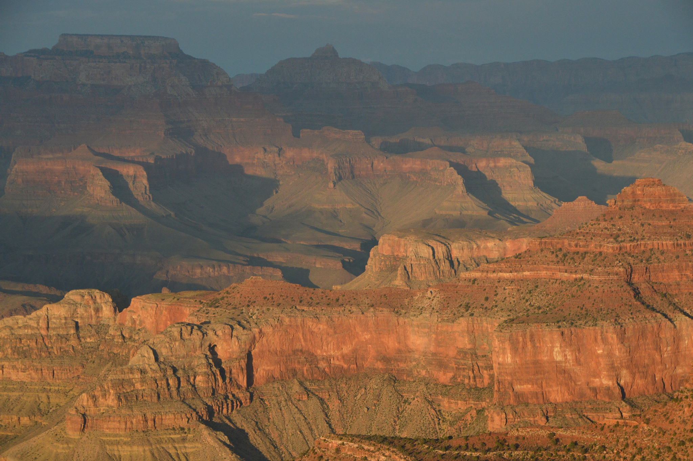
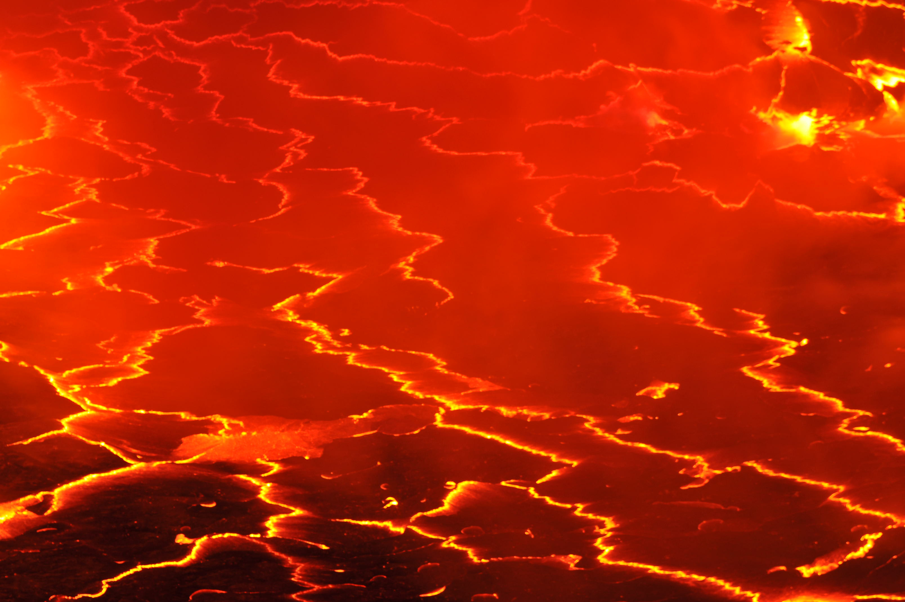
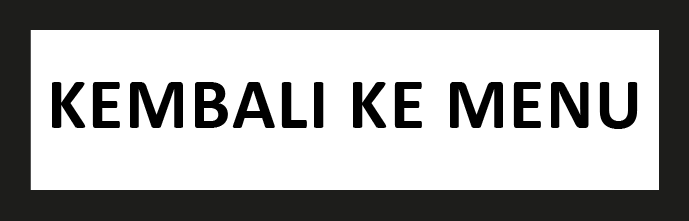
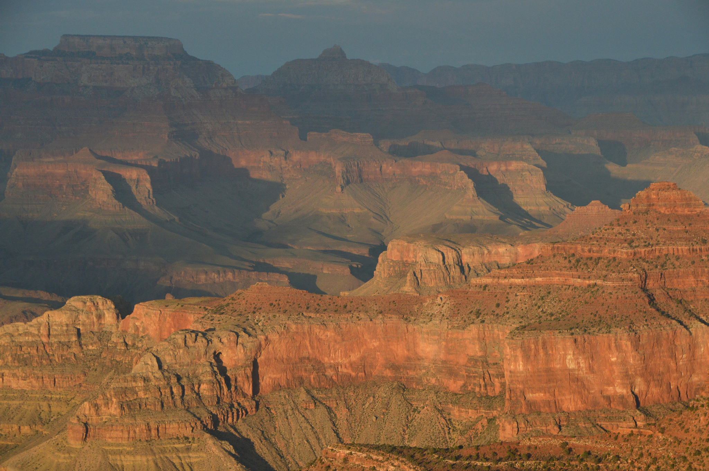
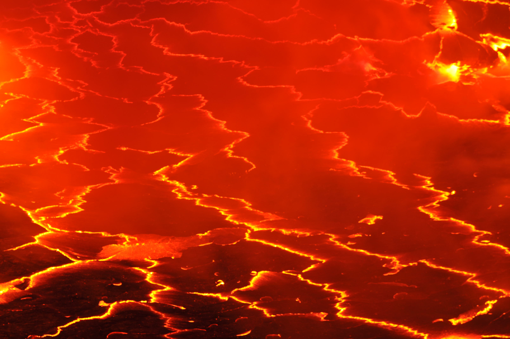
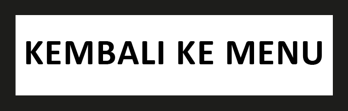
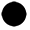
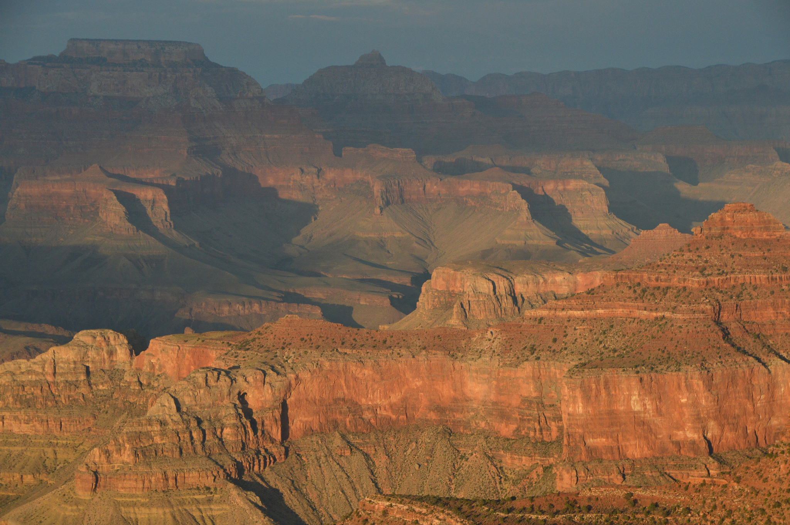
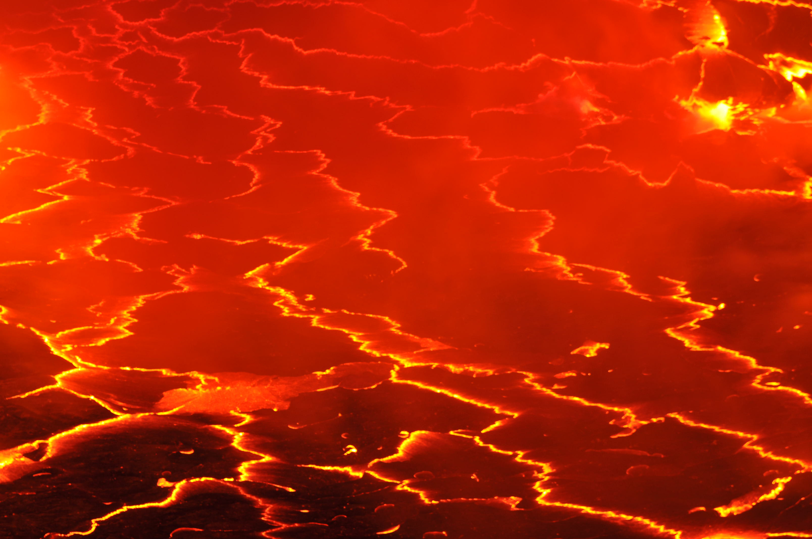
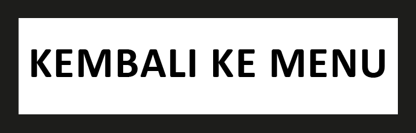

Permukaan Lapisan Bumi 3D di Browser-mu.
Menghadirkan Virtual Reality di Web Browser Anda.
1. Untuk melihat secara 360 derajat, arahkan dan gerakkan kursor secara 360 derajat atau klik icon berikut
2. Untuk menampilkan panel info, arahkan kursor ke titik hitam seperti berikut , klik dan akan muncul panel yang berisi informasi mengenai lapisan tersebut.
Universitas Gunadarma


